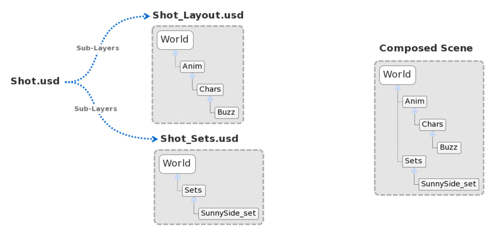
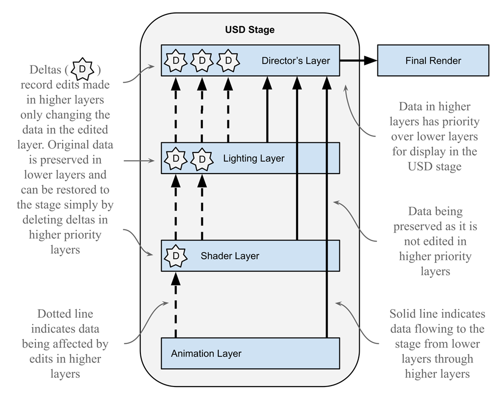

3.4
USD Layer Composition 라이팅 레이어 관리
Sublayer, Reference, Variant를 활용한 라이팅 비파괴 워크플로우

Sublayer - 여러 USD 파일을 논리적으로 결합하는 기법
Reference - 에셋 재사용 및 인스턴스화 기법
Variant/Payload - 변형 관리 및 지연 로딩 기술
비파괴적 작업 방식
원본 에셋을 수정하지 않고 라이팅 오버라이드 적용 가능
병렬 작업 워크플로우
여러 라이팅 아티스트가 동시에 씬의 다른 부분 작업 가능
버전 및 룩 관리
Variant Sets으로 다양한 라이팅 버전을 쉽게 전환

모델링/룩개발 레이어 - 기본 에셋 구조와 머티리얼 정의
레이아웃/애니메이션 레이어 - 캐릭터 및 카메라 모션
라이팅 레이어 - 조명, 렌더 설정 및 룩 마무리
키 라이트 레이어
주요 조명 설정을 독립적인 레이어로 분리하여 관리
~/lighting/key_lights.usd
필/림 라이트 레이어
보조 조명 및 림 라이트를 별도 레이어로 관리
~/lighting/fill_lights.usd
환경광 레이어
HDRI 및 환경 라이팅 설정을 별도 관리
~/lighting/env_lights.usd
마스터 컴포지션
모든 라이팅 레이어를 통합하는 최종 USD
~/lighting/master.usd
레이어 컴포지션 예제 코드
# 마스터 USD 생성 및 서브레이어 추가
stage = Usd.Stage.CreateNew('lighting/master.usd')
rootLayer = stage.GetRootLayer()
# 서브레이어 설정 (상향식 구성)
rootLayer.subLayerPaths = [
'assets/set.usd', # 기본 세트/에셋
'anim/layout.usd', # 레이아웃/애니메이션
'lighting/key_lights.usd', # 키 라이트
'lighting/fill_lights.usd', # 필/림 라이트
'lighting/env_lights.usd' # 환경광
]
# 라이팅 변형 세트 생성
prim = stage.GetPrimAtPath('/World/LightRig')
vset = prim.GetVariantSets().AddVariantSet('LightingVariants')
vset.AddVariant('day')
vset.AddVariant('night')
vset.SetVariantSelection('day')
Computer Graphics & Data Management Course